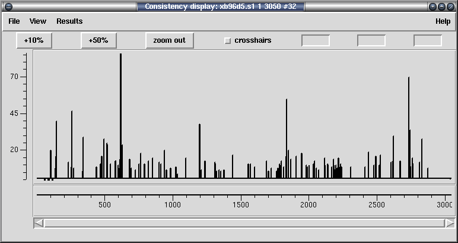

The traditional way to compute the consensus confidence values is to take into account both the matching and mismatching bases within each individual column. If instead we work on the hypothesis that a contig may have more than one sequence present then we can instead compute five consensus confidence values at every point (four bases plus pad) by only totally up the bases that agree and ignoring those that mismatch.

In the case of zero conflicts the highest confidence value will be the same as the standard consensus confidence. When a conflict occurs, the second highest confidence value can be used as a measure of how strong the conflict could be. It is this value is plotted.